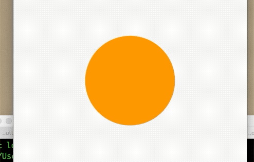

9.5 交织动画
有时候需要一些稍微复杂的动画，这些动画可能是重叠或者组成序列而成，比如：一个矩形形变成圆形，等完全变成圆形然后在变色。可以发现上述场景包含了形变、变色多种动画，实现这种效果，使用交织动画(Stagger Animation)很简单。
- 交织动画需要多个
Animation - 一个
AnimationController控制所有动画 - 给每个动画指定间隔
所有动画都由同一个AnimationController驱动，无论动画需要持续多长时间，控制器的值必须在0到1之间，而每个动画的间隔也都是[0,1],对于每一个动画的属性，需要分别创建一个Tween来指定开始和结束的值。
例子
首先圆角从0变成圆形，然后半径再缩小一半。
效果：

class _BaseTaggerAnimationState extends State<BaseTaggerAnimation>
with SingleTickerProviderStateMixin {
AnimationController _animationController;
Animation<double> _radius;
Animation<double> _height;
@override
void initState() {
_animationController =
AnimationController(vsync: this, duration: Duration(milliseconds: 4000))
..repeat();
_radius = Tween<double>(begin: 0, end: 100).animate(CurvedAnimation(
parent: _animationController,
curve: Interval(0, 0.5, curve: Curves.easeIn)));
_height = Tween<double>(begin: 1, end: 0.5).animate(CurvedAnimation(
parent: _animationController,
curve: Interval(0.5, 1.0, curve: Curves.bounceOut),
));
super.initState();
}
@override
Widget build(BuildContext context) {
return Scaffold(
appBar: AppBar(
title: Text('交织动画'),
),
body: _body(),
);
}
Widget _body() {
double height = 200;
return AnimatedBuilder(
animation: _animationController,
builder: (ctx, child) {
return Center(
child: ClipRRect(
borderRadius: BorderRadius.all(Radius.circular(_radius.value)),
child: Container(
width: height * _height.value,
height: height * _height.value,
color: Colors.orange,
),
),
);
},
);
}
@override
void dispose() {
_animationController.dispose();
super.dispose();
}
}
该页面分别定义了_height、_radius分别对高度、圆角属性的动画，然后通过Interval为每个动画设置起始和结束的时间点。
想继续学习动画内容的同学可以看后期的动画详解与实践！